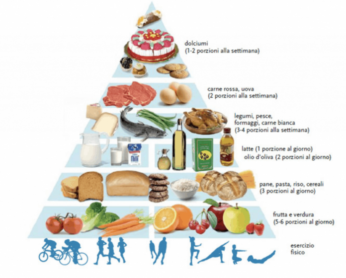
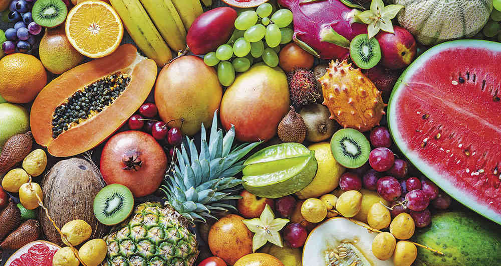
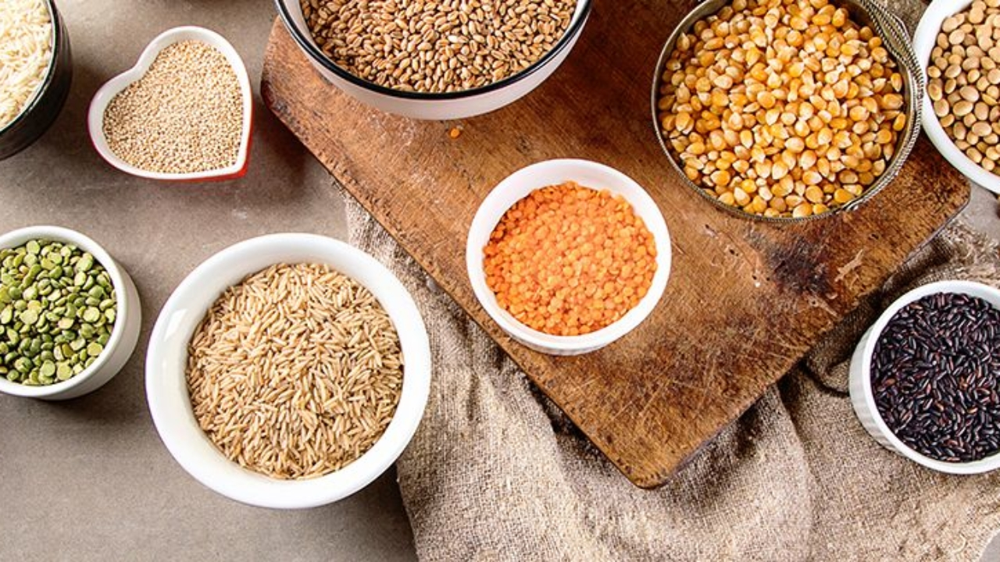

Piramide Alimenticia
La piramide alimenticia, representa de forma triandular las cantidades de alimentos que debemos consumir. En los primeros escalones de la piramide, estan los alimenos que mas debemos consumir en nuestra vida diaria. Cada vez que se sube de nivel, se pude notar que la piramide va siendo cada vez mas angosta, aparencen los alimentos que debemos consumir en menos cantidad.
La piramide si puo suddividere in 6 gruppi principali
1. Agua:
El agua es un elemento muy importante para el cuerpo, que funciona para renovar los liquidos corporeos. Al dia aproximadamente se deben tomar 1,5 litros de agua, ya que ningun otro elemento (como el te, o cafe) lo puede sustituir.
2. Frutas y verduras:
Son alimentos muy importantes en la alimentacion, en efecto se encuentran en la base de la piramide, estos dan vitaminas y minerales que el cuerpo necesita.
3. Legumbres y cereales:
Los cereales y legumbres estan en el segundo escalon de la piramide, sin embargo si se comen en exceso hacen daño
